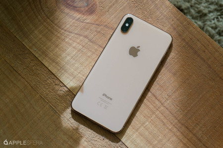
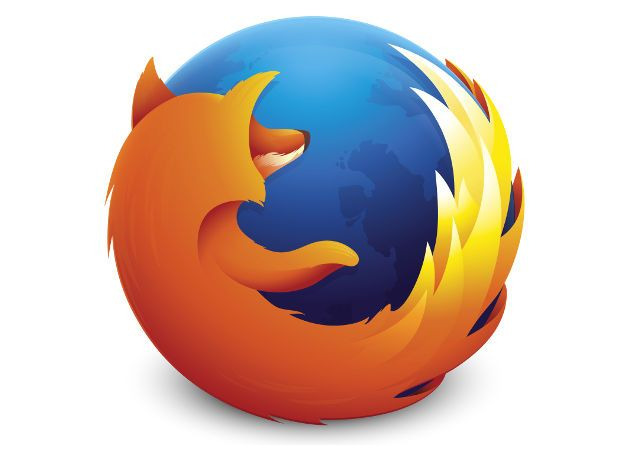
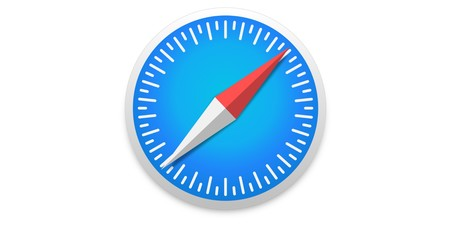
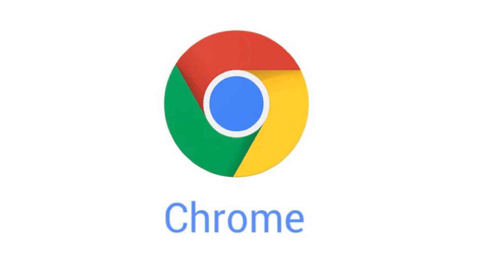

2000. Nuevos dispositivos
Creciente uso de Web en el móvil.
Problemas de estandarización.

2001. Colaboración: Wikipedia
2001 Wikipedia (Jimmy Wales, Larry Sanger)

2002. Mozilla Y Firefox
Mozilla Foundation Netscape había creado la organización Mozilla.
Lanzamiento de Firefox. Anteriormente se llamó Phoenix, Firebird.

2003. Safari
Basado en Konkeror.
Motor de visualización WebKit.
WebKit será la base de Google Chrome.
Navegador de iPhone, iPad, etc..

2004. Contenidos colaborativos
Digg.
2004. Facebook

2005. Multimedia en la Web
YouTube (ex-trabajadores de PayPal).

2006. Twitter

2008. Google Chrome
